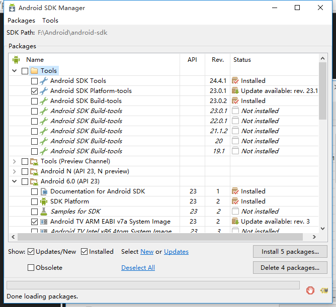

——BY 胡力里
Java 运行时环境（JRE）包含虚拟机但不包含编译器
执行路径是指操作系统搜索本地可执行文件的目录列表。在windows下，即添加环境变量。
书籍：《head first java》、《core java》（《Java核心技术》）
Android官方网站：http://developer.android.com/
Android SDK下载地址：http://developer.android.com/sdk/index.html
运行SDK Manager
安装最新版的sdk的同时安装一个低版本的sdk。版本号的选择取决于你希望最小兼容的Android系统和目标Android系统。
原项目SDK版本号与安装SDK版本号不符时，修改gradle配置文件：
打开Application文件夹中的build.gradle文件
安装好 Genymotion，然后在 IDEA 中选择 File --> Settings，选择 Plugins 并点击 Browse Repositories。接着在左侧列表里找到 Genymotion 并点击安装。安装好后 IDEA 重启，View --> Toolbar 可以打开插件工具栏